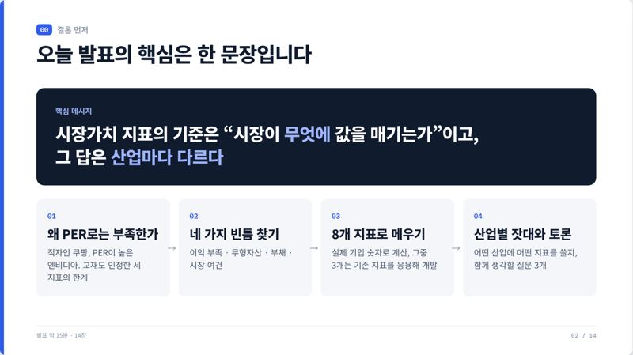
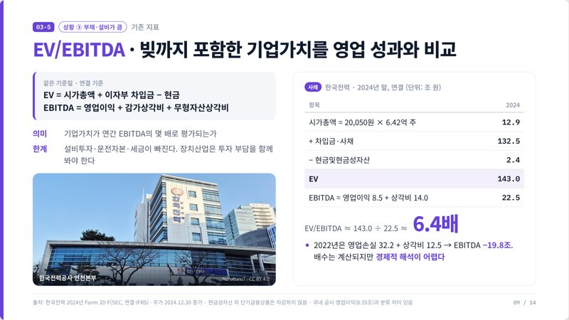
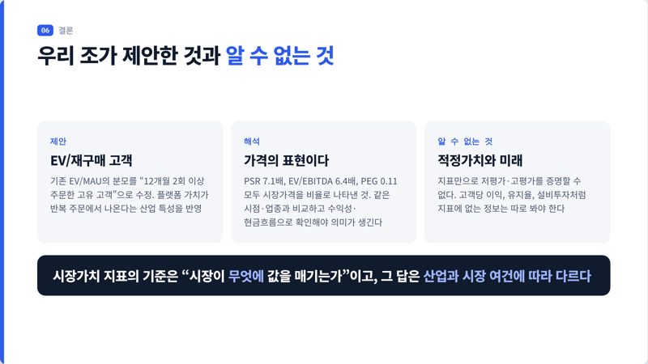

토의 4 · 제11강 재무제표와 재무분석
0:200:00 시작EPS·PER·PBR 너머, 시장은 기업을 무엇으로 평가하는가
안녕하세요. 토의문제 4번을 발표할 4조 고채현, 박민준입니다.
문제는 “EPS, PER, PBR 말고, 산업과 시장 상황을 고려한 시장가치 지표를 개발하고 그 의미를 토론하라”입니다. 저희는 상황에 맞는 지표를 고르고, 그중 하나를 직접 고쳐서 계산해 봤습니다.
토의문제 4번 · 제11강 재무제표와 재무분석 · 4조 고채현, 박민준
“/” 읽는 법: 앞에서부터 “A 대 B”로 읽고, 뜻은 “B 1단위당 A”입니다.
안녕하세요. 토의문제 4번을 발표할 4조 고채현, 박민준입니다.
문제는 “EPS, PER, PBR 말고, 산업과 시장 상황을 고려한 시장가치 지표를 개발하고 그 의미를 토론하라”입니다. 저희는 상황에 맞는 지표를 고르고, 그중 하나를 직접 고쳐서 계산해 봤습니다.

핵심은 한 문장입니다. 시장이 기업에 값을 매기는 기준은 산업과 시장 상황에 따라 다릅니다.
순서는 세 지표의 한계, 판단이 어려운 네 가지 상황, 상황별 지표와 저희가 고친 “EV/재구매 고객”, 그리고 해석과 한계입니다.

EPS는 1주가 번 이익, PER은 이익 대비 주가, PBR은 장부상 재산 대비 주가입니다.
하지만 쿠팡처럼 적자면 PER이 마이너스라 비교가 어렵고, 엔비디아처럼 PER이 66배면 비싼 건지 성장 기대 때문인지 구분이 안 됩니다.
⏎ 엔터 강의자료 25쪽도 이 지표들은 시장이 합리적이라는 가정이 필요하다고 했고,
⏎ 엔터 26쪽은 단기 성과를 강조한다고 지적합니다. 그래서 상황에 맞는 다른 지표가 필요합니다.

판단이 어려운 상황을 네 가지로 나눴습니다.
⏎ 엔터 첫째, 이익이 없거나 작은 회사. PSR과 저희가 고친 EV/재구매 고객을 씁니다.
⏎ 엔터 둘째, 성장 기대가 큰 회사. 성장 속도를 같이 보는 PEG를 씁니다.
⏎ 엔터 셋째, 빚과 설비가 큰 회사. 빚까지 넣은 EV/EBITDA를 씁니다.
⏎ 엔터 넷째, 시장 상황. 금리나 제도에 따라 평가가 달라지니 배당수익률과 토빈의 q로 봅니다.

PSR은 시가총액을 매출로 나눈 값, 매출 1달러를 시장이 얼마로 보느냐입니다.
⏎ 엔터 쿠팡은 상장 첫날 시가총액 약 845억 달러, 전년도 매출 약 120억 달러, 순손실이었습니다. PSR은 약 7배입니다. 적자라도 비교할 숫자가 생긴 거죠.
다만 이건 시장 가격을 매출로 나눈 것일 뿐 적정 가격이라는 뜻은 아니고, 마진이나 빚이 다르면 단순 비교가 어렵습니다.

플랫폼은 사용자 수로도 봅니다. 회사 가치를 한 달 사용자 수로 나눈 EV/MAU입니다.
⏎ 엔터 2019년 딜리버리히어로가 배민 운영사를 인수할 때 회사 가치 40억 달러, 사용자 800만 명 이상이라고 발표했습니다. 사용자 한 명당 최대 약 500달러입니다.
하지만 MAU에는 앱만 켜고 주문은 안 한 사람이나 중복 계정도 들어갑니다. 그래서 저희가 분모를 바꿔 봤습니다.

저희가 고친 지표, EV/재구매 고객입니다. 고객당 가치를 보는 방식은 원래 있고, 저희는 고객을 “최근 1년간 두 번 이상 주문한 실제 손님, 계정이 여러 개여도 한 명”으로 바꿨습니다. 플랫폼 수익은 결국 다시 주문하는 손님에게서 나오기 때문입니다.
⏎ 엔터 가상의 배달앱 A, B는 회사 가치 2조 원, 사용자 1,000만 명으로 같습니다. 사용자 기준으로는 한 명당 20만 원으로 똑같습니다. 그런데 재구매 고객이 A는 600만, B는 300만이면 A는 약 33만 원, B는 약 67만 원입니다.
⏎ 엔터 사용자 수로는 같아 보였지만, 단골 기준으로는 B가 두 배 높게 평가받는 겁니다. 다만 B가 비싸다는 증거는 아니고, 손님 한 명당 이익과 손님을 모으는 비용을 같이 봐야 합니다.

PEG는 PER을 이익 성장률로 나눈 값입니다.
⏎ 엔터 엔비디아는 1년 만에 주당순이익이 586% 늘었고, PER은 약 66배였습니다. 66을 586으로 나누면 PEG는 약 0.11로 아주 싸 보입니다.
하지만 1년에 이익이 일곱 배 뛴 특별한 성장률을 넣어서 그렇게 나온 겁니다. 그래서 PEG는 어떤 성장률을 넣었는지에 따라 결과가 크게 달라진다는 점을 꼭 밝혀야 합니다.

EV/EBITDA는 빚까지 포함한 회사 값이 1년 영업 성과의 몇 배냐입니다.
⏎ 엔터 한국전력은 2024년 말 시가총액이 약 13조 원인데, 빚 132조 원을 더하고 현금을 빼면 회사 값은 약 143조 원입니다. 주가만 보면 빚이 안 보이는 거죠. 1년 영업 성과는 약 22조 5천억 원이라 약 6.4배입니다.
다만 발전 설비에 드는 투자 비용은 이 지표에 빠져 있어서 따로 봐야 합니다.

마지막은 시장 상황입니다. 배당수익률은 주가 대비 배당, 토빈의 q는 회사 값을 자산을 새로 사는 비용과 비교한 겁니다.
⏎ 엔터 2024년 1월 코스피 PBR은 0.88배로 장부 가치보다 낮았습니다. 같은 실적이라도 금리가 오르거나 위험이 크다고 느끼면 평가가 낮아집니다. 정부의 밸류업 방안도 이런 시장 상황을 바꾸려는 시도였습니다.
그래서 지표는 같은 시기, 같은 금리 상황, 같은 업종끼리 비교해야 합니다.

“종합적으로 고려한다”를 저희는 세 단계로 정리했습니다.
⏎ 엔터 1단계, 산업을 보고 무엇으로 나눌지 고릅니다.
⏎ 엔터 2단계, 같은 시기와 업종끼리 비교 기준을 맞춥니다.
⏎ 엔터 3단계, 이익이나 현금 흐름으로 한 번 더 확인합니다. 지표는 시장 가격을 보여 줄 뿐, 싸다는 걸 증명하지는 않기 때문입니다.

저희가 논의한 쟁점 두 가지입니다.
⏎ 엔터 첫째, 사용자 수가 같아도 재구매율이 다르면 같은 가치로 봐도 될까?
⏎ 엔터 저희는 다르게 봐야 한다고 생각했고, 그래서 재구매 고객 기준으로 바꿨습니다.
⏎ 엔터 둘째, 실적이 같아도 금리가 바뀌면 같은 배수를 써도 될까?
⏎ 엔터 저희는 그대로 쓰기 어렵다고 봤습니다. 다만 얼마나 조정할지는 정답이 없습니다.

정리하겠습니다. 저희는 플랫폼은 단골이 중요하다는 산업 특성을 반영해 EV/재구매 고객을 제안했습니다.
오늘 본 숫자들은 모두 시장 가격을 비율로 나타낸 것이라, 같은 기준으로 비교하고 이익으로 확인해야 의미가 있습니다.
⏎ 엔터 결론은 한 문장입니다. 시장이 기업에 값을 매기는 기준은 산업과 시장 상황에 따라 다릅니다. 감사합니다.

질문이 나올 때 쓰는 부록입니다. 문제에서 PER, PBR은 빼라고 해서 이를 고친 지표는 여기로 옮겼습니다.
일회성 이익을 빼면 PER이 약 1.7배 높아지고, 연구개발비를 장부에 다시 넣으면 PBR이 3.0에서 약 2.3으로 내려갑니다. 둘 다 가정에 따라 결과가 달라지는 참고 계산입니다.
Q1. EV/재구매 고객은 새로 만든 지표가 맞나요?
완전히 새로운 지표는 아닙니다. 고객 1명당 가치를 보는 EV/MAU는 원래 있는 지표이고, 저희는 분모를 "최근 12개월 동안 2번 이상 주문한 실제 고객"으로 바꿨습니다. 플랫폼 매출은 접속이 아니라 반복 주문에서 나온다는 산업 특성을 반영한 것이 저희가 바꾼 부분입니다.
Q2. 왜 실제 회사가 아니라 가상 기업으로 계산했나요?
재구매 고객 수는 회사가 공시하지 않는 숫자라서 실제 값을 구할 수 없었습니다. 그래서 실제 숫자와 섞지 않고 가상 기업 A, B로 계산 방법만 보여 드렸습니다.
Q3. "12개월 2회 이상"이라는 기준은 임의적이지 않나요?
맞습니다. 정답인 기준은 아닙니다. 배달처럼 자주 쓰는 서비스는 기준을 높이고, 여행처럼 드물게 쓰는 서비스는 기간을 늘리는 식으로 업종에 맞게 바꿔야 합니다. 중요한 건 같은 기준으로 회사끼리 비교하는 것입니다.
Q4. EV/재구매 고객이 낮으면 저평가라는 뜻인가요?
아닙니다. 이 지표는 시장이 매긴 가격을 고객 수로 나눠 표현한 것일 뿐입니다. 고객당 이익이나 유지율이 낮으면 낮은 값이 당연할 수 있어서, 고객당 마진과 함께 봐야 합니다.
Q5. 엔비디아 PEG 0.11은 너무 낮아서 이상하지 않나요?
과거 1년 EPS 성장률 586%를 넣었기 때문입니다. 이런 성장이 계속된다는 보장은 없어서, 기대 성장률을 넣으면 값이 훨씬 커집니다. 그래서 PEG는 어떤 성장률을 쓰느냐에 따라 결과가 크게 바뀐다는 예시로 보여 드렸습니다.
Q6. 한국전력은 PER로 보면 안 되나요?
볼 수는 있지만, 한전은 빚과 설비가 매우 큰 회사입니다. PER은 주주 몫만 보기 때문에 빚 구조가 드러나지 않습니다. EV/EBITDA는 차입금까지 포함한 기업가치를 영업 성과와 비교해서 이 차이를 볼 수 있습니다. 다만 설비투자 부담은 따로 확인해야 합니다.
Q7. PSR은 이익이 없어도 쓸 수 있으니 PER보다 좋은 지표인가요?
더 좋다기보다 이익이 음수일 때 쓰는 보조 기준입니다. 매출은 많아도 손실이 날 수 있고, 직매입과 중개처럼 매출을 세는 방식이 다르면 같은 업종이라도 비교가 어렵습니다.
Q8. 코스피 PBR이 0.88배면 한국 주식이 싸다는 뜻인가요?
그렇게 단정하기는 어렵습니다. 금리, 위험 인식, 지배구조, 주주환원 기대가 다르면 같은 실적에도 낮은 배수가 붙을 수 있습니다. 저희 결론처럼 지표는 가격을 보여 줄 뿐, 저평가를 증명하지는 않습니다.
Q9. 결국 어떤 지표가 가장 좋은가요?
하나의 정답은 없습니다. 먼저 그 산업의 가치가 매출, 고객, 영업 성과 중 어디서 나오는지 보고 분모를 고릅니다. 그다음 같은 시점과 업종끼리 비교하고, 수익성과 현금흐름으로 한 번 더 확인하는 것이 저희가 말한 "종합적으로 고려한다"는 뜻입니다.